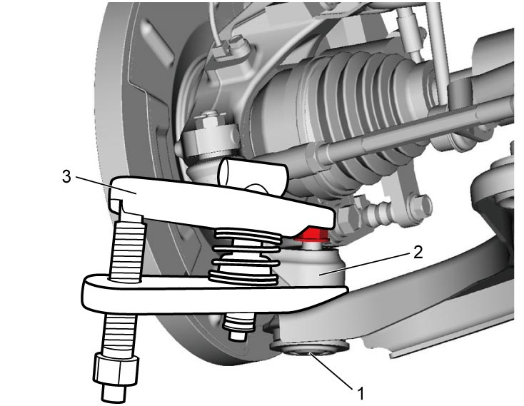

2B
| Suspension Arm Removal and Installation |
NOTICE:
•Unless you pay adequate attention when removing the suspension arm joint from the steering knuckle, the dust boot of the suspension arm joint may be damaged by the puller.
When you remove the suspension arm joint from the steering knuckle, be careful not to damage the dust boot of the suspension arm joint.
•The following bolts and nut are pre-coated with friction stabilizer. If these bolts and nut are reused, they may work loose.
Never reuse the following bolts and nut.
When you remove the suspension arm joint from the steering knuckle, be careful not to damage the dust boot of the suspension arm joint.
•The following bolts and nut are pre-coated with friction stabilizer. If these bolts and nut are reused, they may work loose.
Never reuse the following bolts and nut.
—Suspension arm front bushing bolt
—Suspension arm rear bushing bolt
—Suspension arm joint nut
—Suspension arm rear bushing bolt
—Suspension arm joint nut
Removal
1)Hoist vehicle and remove front wheel. 
2)Remove engine undercover.
3)Remove clip (2).
4)Loosen suspension arm joint nut (1) until the nut end is flush with stud end as shown in figure.

 "Expand image")
5)Disconnect suspension arm joint (1) from steering knuckle (2) using puller (3).
 CAUTION:
CAUTION:
Ball joint puller may fall off when suspension arm joint is disconnected and cause an injury.
Suspend the ball joint puller from the vehicle body using a rope to prevent the puller from falling off.

 "Expand image")
6)Remove suspension arm joint nut.
7)Remove suspension arm front bushing bolt (2) and suspension arm rear bushing bolt (3), and then remove suspension arm (1).
 "Expand image")
Installation
1)Install suspension arm (1) and tighten new suspension arm front bushing bolt (2) and suspension arm rear bushing bolt (3) temporarily by hand.
 "Expand image")
2)Connect suspension arm joint to steering knuckle and then tighten new suspension arm joint nut (1) to specified torque.
NOTE:
If grease is stuck on taper surface of suspension arm joint and knuckle, remove it before connecting these parts.
3)Insert clip (2) to suspension arm joint.
 "Expand image")
4)Install front wheel and tighten wheel bolts to specified torque.
5)Lower hoist and bounce vehicle up and down several times to stabilize suspension. Then, tighten suspension arm front bushing bolt and suspension arm rear bushing bolt to specified torques.
Suspension arm rear bushing bolt (b): 95 N·m (9.7 kgf-m, 70.0 lbf-ft)
Tightening torque
Suspension arm front bushing bolt (a): 165 N·m (16.8 kgf-m, 122.0 lbf-ft)Suspension arm rear bushing bolt (b): 95 N·m (9.7 kgf-m, 70.0 lbf-ft)
 "Expand image")
| 1. | Suspension arm |
6)Hoist vehicle again, and then install engine undercover.
7)Lower hoist, and then check front wheel alignment.